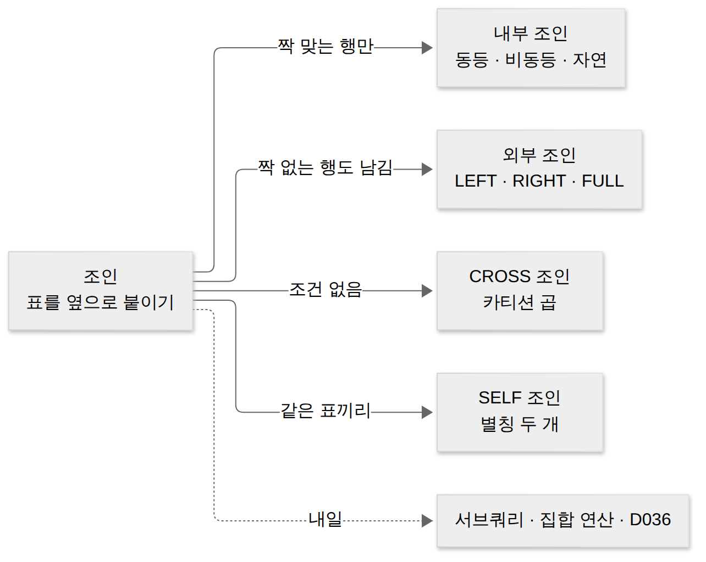
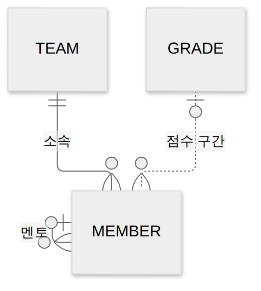
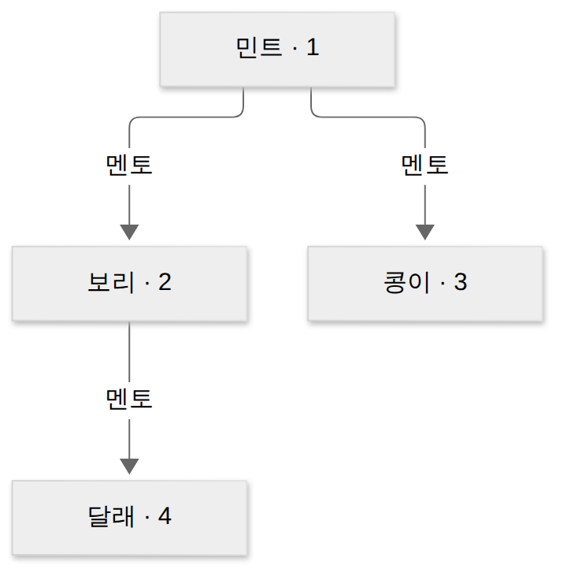
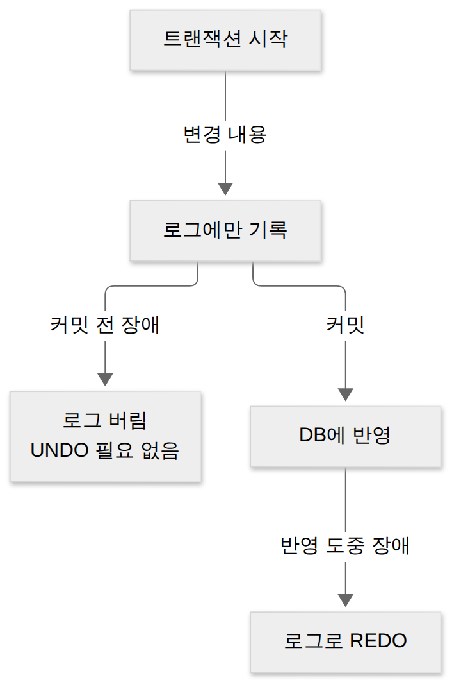

D035 · 조인: 내부(동등·비동등·자연)·외부(LEFT·RIGHT·FULL)·CROSS·SELF
B2 어제 D034까지는 테이블 하나 안에서 고르고, 모으고, 순위를 매겼어요. 그런데 실제 데이터는 한 테이블에 다 있지 않아요. D029에서 정규화로 표를 쪼갰기 때문이죠. 오늘은 쪼갠 표를 다시 붙이는 조인을 봐요. 예시는 코딩 동아리 ‘야근방지단’ 운영진이 회원 명단을 정리하는 장면 하나로 끝까지 가요.
- 내부 조인(동등·비동등·자연)의 결과를 작은 표로 손풀이할 수 있다
- 외부 조인(LEFT·RIGHT·FULL)에서 행이 남는 쪽과 NULL로 채워지는 쪽을 구별할 수 있다
- CROSS 조인(카티션 곱)과 SELF 조인의 쓰임과 결과 행·열 수를 계산할 수 있다
- ON·USING·NATURAL의 차이와 조인 조건을 빠뜨리면 카티션 곱이 되는 이유를 설명할 수 있다
1. 큰 그림 — 쪼갠 표를 다시 옆으로 붙이기
정규화는 같은 정보가 여러 곳에 반복되지 않게 표를 나누는 일이었어요. 팀 이름을 회원 행마다 적어 두면, 팀 이름이 바뀔 때 행 수십 개를 고쳐야 하니까요. 그래서 회원 표에는 팀번호만 두고 팀 이름은 팀 표에 한 번만 적어요. 대신 “보리는 무슨 팀이지?”를 보려면 두 표를 다시 이어야 해요.
정규화가 짐을 칸칸이 나눠 담은 수납장이라면, 조인은 서랍 두 개를 동시에 열어 옆에 펼쳐 놓는 일이에요. 이을 때 기준이 되는 것이 D029에서 본 외래키예요. 회원.팀번호가 팀.팀번호를 가리키니, 두 값이 같은 행끼리 붙이면 돼요.

조인은 표를 옆으로 붙여요. 결과 한 행에 회원 열과 팀 열이 나란히 서니 열이 늘어나요. 내일 볼 UNION 같은 집합 연산은 결과를 아래로 쌓아 행을 늘려요. 둘 다 “두 결과를 합친다”지만 방향이 다르다는 점이 첫 번째 구별 포인트예요.
순서도 하나 기억해 둬요. D033의 논리적 실행 순서에서 FROM이 가장 먼저였죠. 조인은 FROM 안에서 일어나요. 그래서 조인으로 만든 큰 표 위에서 WHERE가 거르고, 어제 본 GROUP BY가 묶어요.
오늘의 사례 — 야근방지단의 세 표
운영진은 회원 명단에 팀 이름과 멘토 이름, 점수 등급까지 한 화면에 보고 싶어 해요. 표는 세 개예요. 달래는 아직 팀이 없어서 팀번호가 NULL이고, 민트는 동아리 창립자라 멘토가 없어서 멘토번호가 NULL이에요. 데이터팀은 만들어 놓았지만 아직 회원이 없어요.
회원 (4행·5열)
| 회원번호 | 이름 | 팀번호 | 멘토번호 | 점수 |
|---|---|---|---|---|
| 1 | 민트 | 10 | NULL | 92 |
| 2 | 보리 | 10 | 1 | 75 |
| 3 | 콩이 | 20 | 1 | 58 |
| 4 | 달래 | NULL | 2 | 81 |
팀 (3행·2열)과 등급 (3행·3열)
| 팀번호 | 팀명 |
|---|---|
| 10 | 백엔드 |
| 20 | 프론트 |
| 30 | 데이터 |
| 등급 | 하한 | 상한 |
|---|---|---|
| A | 90 | 100 |
| B | 70 | 89 |
| C | 0 | 69 |
세 표 사이에는 선이 세 가닥 있어요. 회원.팀번호는 팀으로, 회원.멘토번호는 같은 회원 표의 회원번호로, 회원.점수는 등급 표의 구간으로 이어져요. 선마다 오늘 배울 조인 종류가 하나씩 대응해요.
같은 구조를 ERD로 보면 관계의 모양이 더 잘 보여요. 팀과 회원은 1:N이라 결과에서 팀 정보가 여러 번 반복될 수 있고, 멘토 관계는 회원이 회원을 가리키는 재귀 관계예요.

오늘 나오는 조인을 한 장으로 먼저 정리해 두고, 장면마다 하나씩 풀어 볼게요.
| 분류 | 이름 | 짝 짓는 조건 | 짝 없는 행 |
|---|---|---|---|
| 조건 없음 | CROSS JOIN | 없음(모든 조합) | 해당 없음 |
| 내부 조인 | 동등 조인 | = | 버림 |
| 내부 조인 | 비동등 조인 | BETWEEN, < 등 | 버림 |
| 내부 조인 | 자연 조인 | 이름이 같은 모든 열 = | 버림 |
| 외부 조인 | LEFT · RIGHT · FULL | 보통 = | 지정한 쪽은 남기고 상대편 NULL |
| 같은 표 | SELF JOIN | 별칭 둘 사이의 조건 | 내부·외부 중 선택 |
→ 이 장면의 결과물: 세 표와 세 가닥 연결선. 그래서 다음 장면은 “선을 하나도 고려하지 않으면 무엇이 나오나”, 모든 조인의 출발점인 카티션 곱이에요.
2. 장면 1 — 모든 조합부터 만들어 보기 (CROSS JOIN)
앞에서 세 표를 봤으니, 가장 단순한 붙이기부터 해 봐요. 아무 조건 없이 회원 표와 팀 표를 붙이면 DB는 회원 한 명마다 팀 세 개를 전부 붙여요. 이것이 CROSS JOIN, 다른 말로 카티션 곱(Cartesian Product, 교차 조인)이에요. 정의는 “두 테이블의 각 행을 가능한 모든 조합으로 결합하는 조인”이에요.
CROSS JOIN은 단체 미팅에서 모두가 모두와 한 번씩 악수하는 시간이에요. 4명과 3명이면 악수는 12번이고, 조건 없는 조인은 이 악수를 전부 결과로 돌려줘요. 그래서 결과는 4 × 3 = 12행, 한 행에는 회원 열 5개와 팀 열 2개가 다 들어가 5 + 2 = 7열이에요.
격자를 보면 내부 조인과의 관계도 보여요. 개념상 내부 조인은 이 12칸 중에서 조건이 참인 칸만 고른 것이에요. 실제 DB가 12칸을 다 만든 뒤 고르는 것은 아니지만, 결과는 그렇게 생각하면 정확히 맞아요.
-- 표준 표기
SELECT * FROM 회원 CROSS JOIN 팀;
-- 옛 표기(쉼표). 조건이 없으면 위와 같다
SELECT * FROM 회원, 팀;문제는 두 번째 표기예요. 쉼표로 표를 나열하고 WHERE에 조인 조건을 적는 방식(암시적 조인)에서 그 한 줄을 빠뜨리면 그대로 카티션 곱이 돼요. 출제자는 WHERE 한 줄만 슬쩍 지워 놓고 “행 수는?”이라고 물어요. 답은 구구단이에요.
CROSS JOIN이 늘 실수인 것은 아니에요. 사이즈 3개 × 색상 4개로 상품 옵션 12개를 만들거나, 날짜 표와 지점 표를 곱해 “모든 날 × 모든 지점” 뼈대를 만들 때 일부러 써요.
→ 이 장면의 결과물: 12행짜리 모든 조합. 그래서 다음 장면은 이 중 짝이 맞는 칸만 고르는 내부 조인이에요.
3. 장면 2 — 짝이 맞는 행만 남기기 (내부 조인)
앞 장면의 12칸에서 쓸모 있는 것은 팀번호가 같은 칸뿐이었어요. 그 칸만 남기는 것이 내부 조인이에요. 정의는 “조인 조건을 만족하는 행끼리만 결합하는 조인”이에요. INNER는 생략할 수 있어서 그냥 JOIN이라고 쓰면 내부 조인이에요.
동등 조인 — 같은 값끼리
조건에 =를 쓰는 내부 조인을 동등 조인(Equi Join)이라고 해요. 외래키와 기본키가 같은 행끼리 붙이는, 가장 흔한 조인이에요. 야근방지단 예에서는 민트·보리가 백엔드와, 콩이가 프론트와 붙어 3행이 나와요.
내부 조인은 매칭 프로그램 최종회예요. 짝이 성사된 사람만 마지막 단체 사진에 서요. 팀이 없는 달래와 지원자가 없는 데이터팀은 화면에 안 나와요. 달래가 빠지는 이유는 D033에서 본 대로 NULL = 10이 참이 아니라 UNKNOWN이기 때문이에요.
그림에서 백엔드에 선이 두 개 닿아 있죠. 1:N 관계라 “1” 쪽(팀) 정보가 “N” 쪽(회원) 행 수만큼 반복돼요. 조인 결과의 행 수는 짝이 이어진 선의 개수로 세면 틀리지 않아요.
-- 명시적 표기(ANSI)
SELECT 회원.이름, 팀.팀명
FROM 회원 JOIN 팀 ON 회원.팀번호 = 팀.팀번호;
-- 암시적 표기(쉼표 + WHERE) — 결과 같음
SELECT 회원.이름, 팀.팀명
FROM 회원, 팀 WHERE 회원.팀번호 = 팀.팀번호;두 표기는 결과가 같아요. 명시적 표기는 조인 조건(ON)과 거르기 조건(WHERE)이 다른 자리에 있어 읽기 쉽고, 조건 누락 실수를 줄여 줘요. 암시적 표기는 짧지만 WHERE에 모든 조건이 섞여요.
ON · USING · NATURAL — 조건을 누가 정하나
ON은 조건을 자유롭게 적는 방식이에요. =가 아닌 조건도, 이름이 다른 열끼리도 붙일 수 있어 가장 일반적이에요. 대신 결과에 양쪽 열이 모두 남아 팀번호가 두 번 나와요.
USING은 두 표에 이름이 같은 열이 있을 때 그 열 이름만 괄호에 적는 방식이에요. USING (팀번호)는 팀번호가 같은 행끼리 붙이고, 결과에는 팀번호를 한 번만 보여 줘요.
자연 조인(NATURAL JOIN)은 열 이름조차 적지 않아요. 두 표에서 이름이 같은 모든 열을 DB가 찾아 그 열들이 모두 같은 행끼리 붙이고, 그 열은 한 번만 보여 줘요. 그래서 “동등 조인에서 중복 열을 없앤 것”이라고도 설명해요. 회원과 팀은 같은 이름 열이 팀번호 하나뿐이라 USING (팀번호)와 결과가 같아요.
NATURAL JOIN은 이름만 같으면 다 짝지어 주는 눈치 없는 중매쟁이예요. 나중에 두 표에 ‘등록일’ 열이 생기면 그것까지 같아야 짝이라고 우겨서, 조용히 결과가 비어 버려요. 반대로 같은 이름 열이 하나도 없으면 조건이 없는 셈이라 CROSS JOIN처럼 모든 조합을 돌려줘요.
SELECT * FROM 회원 JOIN 팀 ON 회원.팀번호 = 팀.팀번호; -- 3행, 7열
SELECT * FROM 회원 JOIN 팀 USING (팀번호); -- 3행, 6열
SELECT * FROM 회원 NATURAL JOIN 팀; -- 3행, 6열한 장 요약 — 세 방식은 결과 행은 같아도 조건을 정하는 주체와 열 수가 달라요.
| 방식 | 조건을 정하는 쪽 | 기준 열 출력 |
|---|---|---|
| ON | 사람이 식을 직접 씀(= 아니어도 됨) | 양쪽 다 → 7열 |
| USING (열) | 사람이 같은 이름 열을 지정 | 한 번 → 6열 |
| NATURAL | DB가 같은 이름 열 전부를 자동 선택 | 한 번 → 6열 |
비동등 조인 — 구간에 들어가면 짝
등급 표에는 회원 표와 같은 값을 가진 열이 없어요. 점수 75와 같은 하한도 상한도 없죠. 그래서 “같다” 대신 “구간 안에 있다”로 붙여요. 이렇게 =가 아닌 비교 연산자(BETWEEN, <, >= 등)로 붙이는 조인을 비동등 조인(Non-Equi Join)이라고 해요.
비동등 조인은 옷 사이즈표 보기와 같아요. 가슴둘레가 딱 95인 사이즈를 찾는 게 아니라 “95~100이면 L”처럼 구간에 들어가면 짝이에요. 결과는 민트 A, 보리 B, 콩이 C, 달래 B로 4행이에요. 달래는 팀이 없어도 점수는 있으니 여기서는 빠지지 않아요.
점수 BETWEEN 하한 AND 상한이에요.SELECT 회원.이름, 등급.등급
FROM 회원 JOIN 등급
ON 회원.점수 BETWEEN 등급.하한 AND 등급.상한; -- 4행이름 하나 더. 관계대수에서는 비교 연산자 전부(=, ≠, <, >, ≤, ≥)를 쓰는 조인을 세타 조인이라 불러요. 동등 조인은 세타 조인 중 =만 쓴 특별한 경우예요. 시험에서 “세타 조인 = 임의 비교 연산자”, “동등 조인 = =만”으로 구별해 두면 돼요.
→ 이 장면의 결과물: 팀 이름이 붙은 3행 명단. 그런데 운영진이 묻네요. “달래는 어디 갔어요?” 그래서 다음 장면은 짝 없는 행도 남기는 외부 조인이에요.
4. 장면 3 — 짝 없는 행도 남기기 (외부 조인)
앞 장면의 명단은 정확했지만 불완전했어요. 팀이 없는 회원도 회원이니 명단에는 있어야 하죠. “짝이 없어도 이쪽 행은 남겨 줘”가 외부 조인이에요. 정의는 “조인 조건에 맞지 않는 행도 지정한 테이블 쪽은 결과에 포함하는 조인”이에요. 남길 쪽에 따라 세 가지로 나뉘어요.
LEFT OUTER JOIN은 JOIN 왼쪽에 쓴 표의 행을 전부 남겨요. 짝이 있으면 붙이고, 없으면 오른쪽 열을 NULL로 채워요. LEFT JOIN에서 왼쪽 표는 예약 손님이에요. 짝이 안 나타나도 자리에서 쫓겨나지 않고, 맞은편엔 빈 접시(NULL)가 놓여요. 회원 LEFT JOIN 팀이면 내부 조인 3행 + 달래 1행 = 4행이에요.
RIGHT OUTER JOIN은 방향만 반대예요. 오른쪽 표(팀)를 전부 남기니 회원이 없는 데이터팀이 회원 열 NULL로 붙어 4행이 나와요. 두 표의 순서를 바꾸면 LEFT와 같아서, 현업에서는 LEFT로 통일하는 경우가 많아요.
FULL OUTER JOIN은 양쪽 모두 남겨요. 내부 조인 3행 + 왼쪽 짝 없는 달래 + 오른쪽 짝 없는 데이터팀 = 5행이에요. 키워드 OUTER는 생략해도 돼요(LEFT JOIN = LEFT OUTER JOIN).
SELECT 회원.이름, 팀.팀명 FROM 회원 LEFT JOIN 팀 ON 회원.팀번호 = 팀.팀번호; -- 4행
SELECT 회원.이름, 팀.팀명 FROM 회원 RIGHT JOIN 팀 ON 회원.팀번호 = 팀.팀번호; -- 4행
SELECT 회원.이름, 팀.팀명 FROM 회원 FULL JOIN 팀 ON 회원.팀번호 = 팀.팀번호; -- 5행행 수 세는 법은 하나예요. 먼저 내부 조인 행 수(선의 개수)를 세고, 남기기로 한 쪽에서 짝이 하나도 없는 행 수를 더해요. 1:N이면 내부 조인 행이 이미 늘어나 있으니, LEFT 결과가 왼쪽 표 행 수보다 많을 수도 있어요.
한 장 요약 — 이름이 가리키는 쪽이 지켜지는 쪽이에요.
| 종류 | 전부 남는 쪽 | NULL로 채워지는 쪽 | 사례 |
|---|---|---|---|
| LEFT | 왼쪽(회원) | 오른쪽 열 | 3 + 1 = 4행 |
| RIGHT | 오른쪽(팀) | 왼쪽 열 | 3 + 1 = 4행 |
| FULL | 양쪽 | 짝 없는 쪽의 상대편 | 3 + 1 + 1 = 5행 |
ON에 둘까, WHERE에 둘까
운영진이 “백엔드 팀 정보만 붙여 주되 회원은 다 보여 줘”라고 했어요. LEFT JOIN으로 짝 없는 회원까지 챙겨 놓고 WHERE에서 팀명으로 거르면, 공들여 깐 레드카펫을 내 손으로 다시 걷는 셈이에요. WHERE는 조인이 끝난 뒤 행을 거르는데, 달래 행의 팀명은 NULL이라 NULL = '백엔드'가 UNKNOWN이 되어 탈락해요. 결과는 민트·보리 2행으로 내부 조인과 같아져요.
같은 조건을 ON에 넣으면 의미가 달라져요. ON 조건은 “어떤 짝을 붙일까”만 정하고, LEFT의 왼쪽 행은 짝이 없어도 남아요. 그래서 회원 4행이 그대로 있고, 백엔드가 아닌 콩이와 팀이 없는 달래는 팀명이 NULL이 돼요.
-- 2행 (NULL 행이 WHERE에서 탈락)
SELECT 회원.이름, 팀.팀명 FROM 회원 LEFT JOIN 팀
ON 회원.팀번호 = 팀.팀번호 WHERE 팀.팀명 = '백엔드';
-- 4행 (회원 전부 유지)
SELECT 회원.이름, 팀.팀명 FROM 회원 LEFT JOIN 팀
ON 회원.팀번호 = 팀.팀번호 AND 팀.팀명 = '백엔드';WHERE A.x = B.x(+)는 (+)가 붙은 쪽이 NULL로 채워지는 쪽이라 A 기준 LEFT 조인이에요. MySQL은 FULL OUTER JOIN을 지원하지 않아 LEFT 결과와 RIGHT 결과를 UNION으로 합쳐 대신해요(UNION은 내일). 시험은 표준 SQL 기준이에요.→ 이 장면의 결과물: 회원이 한 명도 빠지지 않은 명단. 이제 남은 선은 멘토 하나예요. 그래서 다음 장면은 같은 표끼리 붙이는 SELF 조인이에요.
5. 장면 4 — 같은 표를 두 장 복사하기 (SELF 조인)
앞 장면까지는 서로 다른 표를 붙였어요. 그런데 멘토도 회원이라, 보리의 멘토 이름은 같은 회원 표 안에 있어요. 이렇게 한 표 안의 행이 다른 행을 가리키는 관계(재귀적 관계)를 풀 때 쓰는 것이 SELF 조인이에요. 정의는 “같은 테이블을 서로 다른 별칭으로 두 번 사용해 자기 자신과 조인하는 것”이에요. 조직도의 직속 상사, 댓글의 부모 댓글, 카테고리의 상위 분류가 모두 같은 모양이에요.
SELF 조인은 회원 명단을 복사기로 한 장 더 뽑아 하나엔 ‘멘티’, 하나엔 ‘멘토’ 포스트잇을 붙이는 일이에요. 포스트잇이 바로 별칭(alias)이에요. 별칭이 없으면 회원.회원번호가 어느 장의 회원번호인지 DB도 사람도 알 수 없어서, SELF 조인에서 별칭은 선택이 아니라 필수예요.
m.멘토번호 = t.회원번호예요. 같은 표를 두 장 놓고 별칭 m·t로 역할을 나눠야 어느 쪽 회원번호인지 정해져요.SELECT m.이름 AS 멘티, t.이름 AS 멘토
FROM 회원 m JOIN 회원 t ON m.멘토번호 = t.회원번호;
-- 보리-민트, 콩이-민트, 달래-보리 : 3행
SELECT m.이름 AS 멘티, t.이름 AS 멘토
FROM 회원 m LEFT JOIN 회원 t ON m.멘토번호 = t.회원번호;
-- 민트-NULL 추가 : 4행SELF 조인은 새로운 종류의 연산이 아니라 붙이는 대상이 자기 자신일 뿐이에요. 그래서 내부 조인으로 쓰면 멘토가 없는 민트가 빠지고, LEFT 조인으로 쓰면 민트도 남아요. 앞 장면에서 배운 규칙이 그대로 적용돼요.

→ 이 장면의 결과물: 멘토 이름이 붙은 명단. 세 가닥 선을 모두 따라갔으니, 다음 장면은 지금까지의 행 수를 한 장으로 모아 봐요.
6. 장면 5 — 행 수 계산 한 장
앞의 네 장면에서 결과 행 수를 계속 셌어요. 시험의 조인 문제는 대부분 “결과가 몇 행인가”로 나오니 규칙을 한 장으로 모아 둬요. 열 수는 USING·NATURAL만 기준 열이 한 번 나와서 줄고, 나머지는 두 표 열 수의 합이에요(SELECT * 기준).
| 조인 | 행 수 규칙 | 사례 행 · 열 |
|---|---|---|
| CROSS (조건 없는 쉼표 포함) | 왼쪽 행 × 오른쪽 행 | 12행 · 7열 |
| 내부 ON (동등) | 조건이 참인 쌍의 수 | 3행 · 7열 |
| USING · NATURAL | 내부와 같음 | 3행 · 6열 |
| 비동등 (등급 BETWEEN) | 구간에 드는 쌍의 수 | 4행 · 8열 |
| LEFT · RIGHT | 내부 + 그쪽 짝 없는 행 | 4행 · 7열 |
| FULL | 내부 + 양쪽 짝 없는 행 | 5행 · 7열 |
| SELF (내부) | 조건이 참인 쌍의 수 | 3행 · 10열 |
이 규칙 하나면 낯선 표가 나와도 풀 수 있어요. 순서는 언제나 같아요. 선을 긋고(내부), 외톨이를 세고(외부), 조건이 없으면 곱해요(CROSS). 출제자가 표 이름을 고객·주문으로 바꾸든 학생·수강으로 바꾸든, 세는 손은 이 세 동작만 반복하면 돼요.
→ 이 장면의 결과물: 행 수 계산표. 이제 예정된 오답 두 개를 다시 봐요.
7. 오답 복습 — 재공학 · 지연 갱신
조인은 여기까지예요. 예정된 재확인 두 개는 서로 다른 과목이라, 각각 무엇을 가르는 질문이었는지부터 다시 세워 둘게요.
재공학 vs 리팩토링 (D030)
리팩토링은 외부에서 보이는 동작을 바꾸지 않고 코드 내부 구조만 개선하는 일이에요. 메서드를 쪼개고 이름을 고치는 수준이죠. 재공학(Re-engineering)은 범위가 시스템 전체예요. 기존 시스템을 분석해 이해하고, 구조를 재구성하고, 역공학으로 문서·설계 정보를 복원하고, 새 환경으로 이관하는 활동을 모두 포함해요.
리팩토링이 서랍 속 정리라면, 재공학은 도면 없는 집을 실측해 도면부터 복원하고 구조를 고친 뒤 새 건축 기준에 맞춰 다시 준공하는 리모델링이에요. 문제에 ‘분석·역공학·이관’처럼 시스템 수준의 활동이 여러 개 나오면 리팩토링이 아니라 재공학이에요.
지연 갱신의 회복 (D031)
지연 갱신(Deferred Update)은 트랜잭션이 커밋될 때까지 변경 내용을 DB에 쓰지 않고 로그에만 모아 두는 회복 기법이에요. 커밋 전에 장애가 나면 DB에는 아무것도 쓰이지 않았으니 되돌릴 것이 없어요. 커밋했는데 DB 반영을 마치지 못했다면 로그를 보고 다시 하면 돼요. 그래서 REDO만 필요해요.
지연 갱신은 결재 도장이 찍히기 전엔 장부에 연필로도 안 쓰는 신중한 경리예요. 반대로 즉시 갱신은 커밋 전에도 DB에 바로 쓰기 때문에, 장애 시 미완료 트랜잭션은 UNDO, 완료 트랜잭션은 REDO로 둘 다 필요해요.

| 헷갈리는 짝 | 가르는 질문 | 답 |
|---|---|---|
| 리팩토링 / 재공학 | 동작 그대로 코드 내부만? 시스템 전체 분석·복원·이관까지? | 내부만 → 리팩토링 / 전체 → 재공학 |
| 지연 갱신 / 즉시 갱신 | 커밋 전에 DB에 썼나? | 안 썼다 → REDO만 / 썼다 → REDO + UNDO |
8. 시험 포인트 한 장 + 다음 예고
=, 세타 = 임의 비교, 비동등 = = 아닌 조건 ③ 자연 조인 = 같은 이름 열 전부로 자동 결합, 그 열은 한 번 ④ USING은 지정한 열만, 한 번 / ON은 두 번 ⑤ LEFT·RIGHT·FULL = 남는 쪽, 상대편 NULL ⑥ LEFT 후 WHERE로 오른쪽 열을 거르면 내부 조인처럼 ⑦ SELF = 별칭 두 개장면을 한 번 더 꿰면 이래요.
| 장면 | 하는 일 | 시험 개념 | 결과물 |
|---|---|---|---|
| 큰 그림 | 쪼갠 표를 옆으로 | 조인 vs 집합 연산 | 세 표와 연결선 |
| 장면 1 | 모든 조합 | CROSS JOIN · 카티션 곱 | 12행 · 7열 |
| 장면 2 | 짝 맞는 행만 | 동등 · 자연 · 비동등, ON · USING | 3행 / 4행 |
| 장면 3 | 외톨이도 남기기 | LEFT · RIGHT · FULL | 4 · 4 · 5행 |
| 장면 4 | 같은 표 두 장 | SELF JOIN · 별칭 | 멘토 명단 3행 |
| 장면 5 | 행 수 세기 | 곱 · 선 · 외톨이 | 계산표 |
내일 D036은 서브쿼리와 집합 연산자예요. 오늘 표를 옆으로 붙였다면, 내일은 쿼리 안에 쿼리를 넣고(러시아 인형처럼 안쪽부터 열어요) 결과를 아래로 쌓아요(UNION · INTERSECT · EXCEPT).
확인 문제
1~3번은 오늘 범위, 4·5번은 오답 재확인, 6번은 지난 범위 누적이에요. 1번은 아래 두 테이블 기준이에요.
고객
| 고객번호 | 이름 |
|---|---|
| 1 | 가람 |
| 2 | 나래 |
| 3 | 다온 |
주문
| 주문번호 | 고객번호 |
|---|---|
| 101 | 1 |
| 102 | 1 |
| 103 | 2 |
| 104 | 4 |
SELECT * FROM 고객 C LEFT OUTER JOIN 주문 O ON C.고객번호 = O.고객번호;의 결과 행 수는?- 두 테이블에서 이름이 같은 모든 열을 기준으로 값이 같은 행끼리 결합하고, 그 기준 열을 결과에 한 번만 표시하는 조인은?
부서테이블은 4행·3열,직원테이블은 5행·4열이다. 조인 조건 없이SELECT * FROM 부서, 직원;을 실행한 결과의 행 수와 열 수는?- 문서 없이 운영되던 시스템을 분석해 이해하고, 역공학으로 설계 정보를 복원한 뒤 구조를 재구성하고, 새 플랫폼으로 이관까지 하는 시스템 수준의 개조 활동은?
- 트랜잭션이 커밋되기 전에는 데이터베이스에 변경 내용을 쓰지 않고 로그에만 기록하는 회복 기법에서, 장애 후 필요한 연산은?
- 쇼핑몰 프로그램에서
주문객체가결제객체에게 “이 금액을 결제해 줘”라고 연산 수행을 요청하는 것 자체를 가리키는 객체지향 용어는?
고른 뒤 답안 복사 → 디스코드 공부 채널에 붙여넣기 하면 돼요.
답장: 정처기 D035: 1)번호 2)번호 3)번호 4)번호 5)번호 6)번호
1번은 선부터 긋고 남길 쪽의 외톨이를 세어 보세요. D033·D034 답장도 편할 때 함께 보내 주세요.